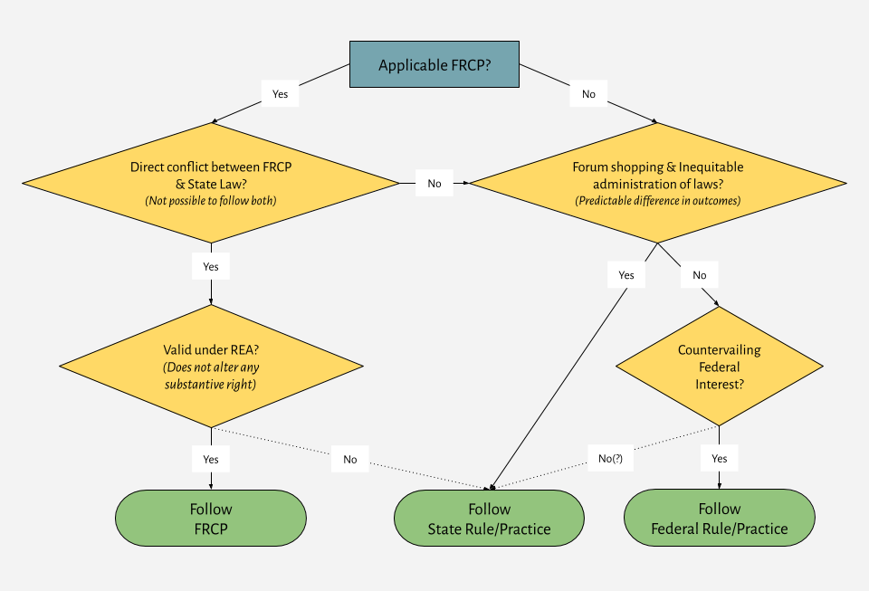

5 Choice of Law in Federal Court
5.1 Choice of Law Under the Rules of Decision Act
The Rules of Decision Act
28 U.S.C. § 1652 – State laws as rules of decision
The laws of the several states, except where the Constitution or treaties of the United States or Acts of Congress otherwise require or provide, shall be regarded as rules of decision in civil actions in the courts of the United States, in cases where they apply.
Swift v. Tyson (U.S. 1842)
Summary of Facts. George Tyson purchased some land from Nathaniel Norton and Jairus Keith. As partial payment, Tyson gave Norton and Keith a bill of exchange (i.e. “a signed, unconditional, written order binding one party to pay a fixed sum of money to another party on demand or at a predetermined date.” Wex Legal Dictionary). It turned out that, not only was the land virtually worthless, North and Keith did not actually own it. Before the bill of exchange came due, Norton signed it over to the plaintiff, John Swift, ostensibly in payment of a debt. Swift then sought payment on the bill of exchange from Tyson, who refused on the ground that it was procured by fraud. Swift (a resident of Maine) sued Tyson (a resident of New York) in federal court, which had jurisdiction based on diversity of citizenship.
Justice Story delivered the opinion of the Court.
There is no doubt, that a bonâ fide holder of a negotiable instrument for a valuable consideration, without any notice of facts which impeach its validity as between the antecedent parties, if he takes it under an endorsement made before the same becomes due, holds the title unaffected by these facts, and may recover thereon, although as between the antecedent parties the transaction may be without any legal validity. This is a doctrine so long and so well established, and so essential to the security of negotiable paper, that it is laid up among the fundamentals of the law, and requires no authority or reasoning to be now brought in its support. As little doubt is there, that the holder of any negotiable paper, before it is due, is not bound to prove that he is a bonâ fide holder for a valuable consideration, without notice; for the law will presume that, in the absence of all rebutting proofs, and therefore it is incumbent upon the defendant to establish by way of defence satisfactory proofs of the contrary, and thus to overcome the primâ facie title of the plaintiff.
In the present case, the plaintiff is a bonâ fide holder without notice for what the law deems a good and valid consideration, that is, for a pre-existing debt; and the only real question in the cause is, whether, under the circumstances of the present case, such a pre-existing debt constitutes a valuable consideration in the sense of the general rule applicable to negotiable instruments. We say, under the circumstances of the present case, for the acceptance having been made in New York, the argument on behalf of the defendant is, that the contract is to be treated as a New York contract, and therefore to be governed by the laws of New York, as expounded by its Courts, as well upon general principles, as by the express provisions of the [Rules of Decision Act]. And then it is further contended, that by the law of New York, as thus expounded by its Courts, a pre-existing debt does not constitute, in the sense of the general rule, a valuable consideration applicable to negotiable instruments.
But, admitting the doctrine to be fully settled in New York, it remains to be considered, whether it is obligatory upon this Court, if it differs from the principles established in the general commercial law. It is observable that the Courts of New York do not found their decisions upon this point upon any local statute, or positive, fixed, or ancient local usage: but they deduce the doctrine from the general principles of commercial law. It is, however, contended, that the [Rules of Decision Act] furnishes a rule obligatory upon this Court to follow the decisions of the state tribunals in all cases to which they apply. That section provides “that the laws of the several states, except where the Constitution, treaties, or statutes of the United States shall otherwise require or provide, shall be regarded as rules of decision in trials at common law in the Courts of the United States, in cases where they apply.” In order to maintain the argument, it is essential, therefore, to hold, that the word “laws,” in this section, includes within the scope of its meaning the decisions of the local tribunals. In the ordinary use of language it will hardly be contended that the decisions of Courts constitute laws. They are, at most, only evidence of what the laws are; and are not of themselves laws. They are often re-examined, reversed, and qualified by the Courts themselves, whenever they are found to be either defective, or ill-founded, or otherwise incorrect. The laws of a state are more usually understood to mean the rules and enactments promulgated by the legislative authority thereof, or long established local customs having the force of laws. In all the various cases which have hitherto come before us for decision, this Court have uniformly supposed, that the true interpretation of the thirty-fourth section limited its application to state laws strictly local, that is to say, to the positive statutes of the state, and the construction thereof adopted by the local tribunals, and to rights and titles to things having a permanent locality, such as the rights and titles to real estate, and other matters immovable and intraterritorial in their nature and character. It never has been supposed by us, that the section did apply, or was designed to apply, to questions of a more general nature, not at all dependent upon local statutes or local usages of a fixed and permanent operation, as, for example, to the construction of ordinary contracts or other written instruments, and especially to questions of general commercial law, where the state tribunals are called upon to perform the like functions as ourselves, that is, to ascertain upon general reasoning and legal analogies, what is the true exposition of the contract or instrument, or what is the just rule furnished by the principles of commercial law to govern the case. And we have not now the slightest difficulty in holding, that this section, upon its true intendment and construction, is strictly limited to local statutes and local usages of the character before stated, and does not extend to contracts and other instruments of a commercial nature, the true interpretation and effect whereof are to be sought, not in the decisions of the local tribunals, but in the general principles and doctrines of commercial jurisprudence. Undoubtedly, the decisions of the local tribunals upon such subjects are entitled to, and will receive, the most deliberate attention and respect of this Court; but they cannot furnish positive rules, or conclusive authority, by which our own judgments are to be bound up and governed. The law respecting negotiable instruments may be truly declared in the language of Cicero, to be in a great measure, not the law of a single country only, but of the commercial world. Non erit alia lex Romæ, alia Athenis, alia nunc, alia posthac, sed et apud omnes gentes, et omni tempore, una eademque lex obtenebit.
It becomes necessary for us, therefore, upon the present occasion to express our own opinion of the true result of the commercial law upon the question now before us. And we have no hesitation in saying, that a pre-existing debt does constitute a valuable consideration in the sense of the general rule already stated, as applicable to negotiable instruments. Assuming it to be true, (which, however, may well admit of some doubt from the generality of the language,) that the holder of a negotiable instrument is unaffected with the equities between the antecedent parties, of which he has no notice, only where he receives it in the usual course of trade and business for a valuable consideration, before it becomes due; we are prepared to say, that receiving it in payment of, or as security for a pre-existing debt, is according to the known usual course of trade and business.
Swift and Its Discontents
Justice Story’s opinion quotes the Roman statesman and philosopher Cicero for the proposition that the common law cannot differ from state to state. The cited passage1 summarizes the natural law paradigm:
1 Cicero, On the Republic, Book III, §22
True law is right reason in agreement with nature; it is of universal application, unchanging and everlasting; It is a sin to try to alter this law, nor is it allowable to attempt to repeal any part of it, and it is impossible to abolish it entirely. We cannot be freed from its obligations by senate or people, and we need not look outside ourselves for an expounder or interpreter of it. And there will not be different laws at Rome and at Athens, or different laws now and in the future, but one eternal and unchangeable law will be valid for all nations and all times, and there will be one master and ruler, that is, God, over us all, for he is the author of this law, its promulgator, and its enforcing judge. Whoever is disobedient is fleeing from himself and denying his human nature, and by reason of this very fact he will suffer the worst penalties, even if he escapes what is commonly considered punishment.
During the late 19th and early 20th centuries, the legal field experienced a paradigm shift,2 with concepts and methods associated with legal positivism, realism, and pragmatism challenging the previously dominant paradigm of natural law and formalism. Cases like Erie and International Shoe, along with the adoption of the Federal Rules of Civil Procedure, were significant moments in this jurisprudential revolution.3
2 A paradigm shift is a transformation in the fundamental assumptions, theories, and practice of a scientific or professional community. “When the transition is completed, the profession will have changed its view of the field, its methods, and its goals.” Kuhn & Hacking (2012): 84-85.
3 See, e.g. Rutherglen (2001); Sawyer III (2001); Marcus (2009); Casto (1987).
Among those leading the charge was Oliver Wendell Holmes, Jr., whose work as a legal scholar and opinions as a Supreme Court Justice advanced a positivist understanding of law and pragmatist approach to judicial decision-making, and laid the groundwork for overturning Swift.
The life of the law has not been logic: it has been experience. The felt necessities of the time, the prevalent moral and political theories, intuitions of public policy, avowed or unconscious, even the prejudices which judges share with their fellow-men, have had a good deal more to do than the syllogism in determining the rules by which men should be governed. The law embodies the story of a nation’s development through many centuries, and it cannot be dealt with as if it contained only the axioms and corollaries of a book of mathematics. In order to know what it is, we must know what it has been, and what it tends to become. We must alternately consult history and existing theories of legislation. But the most difficult labor will be to understand the combination of the two into new products at every stage. The substance of the law at any given time pretty nearly corresponds, so far as it goes, with what is then understood to be convenient; but its form and machinery, and the degree to which it is able to work out desired results, depend very much upon its past.4
4 Oliver Wendall Holmes, The Common Law (1881).
The common law is not a brooding omnipresence in the sky but the articulate voice of some sovereign or quasi-sovereign that can be identified; although some decisions with which I have disagreed seem to me to have forgotten the fact. It always is the law of some State.5
5 Southern Pacific Co. v. Jensen, 244 U.S. 205 (1917) (Holmes, J. dissenting).
Holmes sharply criticized the Swift approach to the Rules of Decision Act on positivist grounds in Black & White Taxicab Co. v. Brown & Yellow Taxicab Co., 279 U.S. 518, 532-536 (1928) (Holmes, J., dissenting):
This is a suit brought by The Brown and Yellow Taxicab and Transfer Company, as plaintiff, to prevent The Black and White Taxicab and Transfer Company, from interfering with the carrying out of a contract between the plaintiff and the other defendant, The Louisville and Nashville Railroad Company. The Circuit Court of Appeals, affirming a decree of the District Court, granted an injunction and upheld this contract. It expressly recognized that the decisions of the Kentucky Courts held that in Kentucky a railroad company could not grant such rights, but this being a ‘question of general law’ it went its own way regardless of the Courts of this State.
The Circuit Court of Appeals had so considerable a tradition behind it in deciding as it did that if I did not regard the case as exceptional I should not feel warranted in presenting my own convictions again after having stated them in Kuhn v. Fairmont Coal Company. But the question is important and in my opinion the prevailing doctrine has been accepted upon a subtle fallacy that never has been analyzed. If I am right the fallacy has resulted in an unconstitutional assumption of powers by the Courts of the United States which no lapse of time or respectable array of opinion should make us hesitate to correct. Therefore I think it proper to state what I think the fallacy is. — The often repeated proposition of this and the lower Courts is that the parties are entitled to an independent judgment on matters of general law. By that phrase is meant matters that are not governed by any law of the United States or by any statute of the State — matters that in States other than Louisiana are governed in most respects by what is called the common law. It is through this phrase that what I think the fallacy comes in.
Books written about any branch of the common law treat it as a unit, cite cases from this Court, from the Circuit Courts of Appeals, from the State Courts, from England and the Colonies of England indiscriminately, and criticize them as right or wrong according to the writer’s notions of a single theory. It is very hard to resist the impression that there is one august corpus, to understand which clearly is the only task of any Court concerned. If there were such a transcendental body of law outside of any particular State but obligatory within it unless and until changed by statute, the Courts of the United States might be right in using their independent judgment as to what it was. But there is no such body of law. The fallacy and illusion that I think exist consist in supposing that there is this outside thing to be found. Law is a word used with different meanings, but law in the sense in which courts speak of it today does not exist without some definite authority behind it. The common law so far as it is enforced in a State, whether called common law or not, is not the common law generally but the law of that State existing by the authority of that State without regard to what it may have been in England or anywhere else. It may be adopted by statute in place of another system previously in force. But a general adoption of it does not prevent the State Courts from refusing to follow the English decisions upon a matter where the local conditions are different. It may be changed by statute, as is done every day. It may be departed from deliberately by judicial decisions, as with regard to water rights, in States where the common law generally prevails. Louisiana is a living proof that it need not be adopted at all. Whether and how far and in what sense a rule shall be adopted whether called common law or Kentucky law is for the State alone to decide.
If within the limits of the Constitution a State should declare one of the disputed rules of general law by statute there would be no doubt of the duty of all Courts to bow, whatever their private opinions might be. I see no reason why it should have less effect when it speaks by its other voice. If a state constitution should declare that on all matters of general law the decisions of the highest Court should establish the law until modified by statute or by a later decision of the same Court, I do not perceive how it would be possible for a Court of the United States to refuse to follow what the State Court decided in that domain. But when the constitution of a State establishes a Supreme Court it by implication does make that declaration as clearly as if it had said it in express words, so far as it is not interfered with by the superior power of the United States. The Supreme Court of a State does something more than make a scientific inquiry into a fact outside of and independent of it. It says, with an authority that no one denies, except when a citizen of another State is able to invoke an exceptional jurisdiction, that thus the law is and shall be. Whether it be said to make or to declare the law, it deals with the law of the State with equal authority however its function may be described.
Mr. Justice Story in Swift v. Tyson, evidently under the tacit domination of the fallacy to which I have referred, devotes some energy to showing that the Rules of Decision Act refers only to statutes when it provides that except as excepted the laws of the several States shall be regarded as rules of decision in trials at common law in Courts of the United States. An examination of the original document by a most competent hand has shown that Mr. Justice Story probably was wrong if anyone is interested to inquire what the framers of the instrument meant. 37 Harvard Law Review, 49, at pp. 81-88. But this question is deeper than that; it is a question of the authority by which certain particular acts, here the grant of exclusive privileges in a railroad station, are governed. In my opinion the authority and only authority is the State, and if that be so, the voice adopted by the State as its own should utter the last word. I should leave Swift v. Tyson undisturbed, as I indicated in Kuhn v. Fairmont Coal Co., but I would not allow it to spread the assumed dominion into new fields.
In view of what I have said it is not necessary for me to give subordinate and narrower reasons for my opinion that the decision below should be reversed. But there are adequate reasons short of what I think should be recognized. This is a question concerning the lawful use of land in Kentucky by a corporation chartered by Kentucky. The policy of Kentucky with regard to it has been settled in Kentucky for more than thirty-five years. Even under the rule that I combat, it has been recognized that a settled line of state decisions was conclusive to establish a rule of property or the public policy of the State. I should have supposed that what arrangements could or could not be made for the use of a piece of land was a purely local question, on which, if on anything, the State should have its own way and the State Courts should be taken to declare what the State wills.
Holmes stepped down from the Court in 1932 and died in 1935. Three years later, the Court, in an opinion by Justice Louis Brandeis (another important figure in legal pragmatism and realism) overturned Swift and adopted a positivist interpretation of the Rules of Decision Act.
Erie R. Co. v. Tompkins (U.S. 1938)
Justice Brandeis delivered the opinion of the Court.
The question for decision is whether the oft-challenged doctrine of Swift v. Tyson shall now be disapproved.
Tompkins, a citizen of Pennsylvania, was injured on a dark night by a passing freight train of the Erie Railroad Company while walking along its right of way at Hughestown in that State. He claimed that the accident occurred through negligence in the operation, or maintenance, of the train; that he was rightfully on the premises as licensee because on a commonly used beaten footpath which ran for a short distance alongside the tracks; and that he was struck by something which looked like a door projecting from one of the moving cars. To enforce that claim he brought an action in the federal court for southern New York, which had jurisdiction because the company is a corporation of that State. It denied liability; and the case was tried by a jury.
The Erie insisted that its duty to Tompkins was no greater than that owed to a trespasser. It contended, among other things, that its duty to Tompkins, and hence its liability, should be determined in accordance with the Pennsylvania law; that under the law of Pennsylvania, as declared by its highest court, persons who use pathways along the railroad right of way—that is a longitudinal pathway as distinguished from a crossing—are to be deemed trespassers; and that the railroad is not liable for injuries to undiscovered trespassers resulting from its negligence, unless it be wanton or wilful. Tompkins denied that any such rule had been established by the decisions of the Pennsylvania courts; and contended that, since there was no statute of the State on the subject, the railroad’s duty and liability is to be determined in federal courts as a matter of general law.
The trial judge refused to rule that the applicable law precluded recovery. The jury brought in a verdict of $30,000; and the judgment entered thereon was affirmed by the Circuit Court of Appeals, which held that it was unnecessary to consider whether the law of Pennsylvania was as contended, because the question was one not of local, but of general, law and that “upon questions of general law the federal courts are free, in the absence of a local statute, to exercise their independent judgment as to what the law is; and it is well settled that the question of the responsibility of a railroad for injuries caused by its servants is one of general law. Where the public has made open and notorious use of a railroad right of way for a long period of time and without objection, the company owes to persons on such permissive pathway a duty of care in the operation of its trains. It is likewise generally recognized law that a jury may find that negligence exists toward a pedestrian using a permissive path on the railroad right of way if he is hit by some object projecting from the side of the train.”
The Erie had contended that application of the Pennsylvania rule was required, among other things, by the Rules of Decision Act, which provides:
The laws of the several States, except where the Constitution, treaties, or statutes of the United States otherwise require or provide, shall be regarded as rules of decision in trials at common law, in the courts of the United States, in cases where they apply.
Because of the importance of the question whether the federal court was free to disregard the alleged rule of the Pennsylvania common law, we granted certiorari.
First. Swift v. Tyson held that federal courts exercising jurisdiction on the ground of diversity of citizenship need not, in matters of general jurisprudence, apply the unwritten law of the State as declared by its highest court; that they are free to exercise an independent judgment as to what the common law of the State is—or should be; and that, as there stated by Mr. Justice Story:
the true interpretation of the thirty-fourth section limited its application to state laws strictly local, that is to say, to the positive statutes of the state, and the construction thereof adopted by the local tribunals, and to rights and titles to things having a permanent locality, such as the rights and titles to real estate, and other matters immovable and intraterritorial in their nature and character. It never has been supposed by us, that the section did apply, or was intended to apply, to questions of a more general nature, not at all dependent upon local statutes or local usages of a fixed and permanent operation, as, for example, to the construction of ordinary contracts or other written instruments, and especially to questions of general commercial law, where the state tribunals are called upon to perform the like functions as ourselves, that is, to ascertain upon general reasoning and legal analogies, what is the true exposition of the contract or instrument, or what is the just rule furnished by the principles of commercial law to govern the case.
The Court in applying the Rules of Decision Act to equity cases, in Mason v. United States, 260 U.S. 545, 559, said: “The statute, however, is merely declarative of the rule which would exist in the absence of the statute.” The federal courts assumed, in the broad field of “general law,” the power to declare rules of decision which Congress was confessedly without power to enact as statutes. Doubt was repeatedly expressed as to the correctness of the construction given the Rules of Decision Act, and as to the soundness of the rule which it introduced. But it was the more recent research of a competent scholar, who examined the original document, which established that the construction given to it by the Court was erroneous; and that the purpose of the section was merely to make certain that, in all matters except those in which some federal law is controlling, the federal courts exercising jurisdiction in diversity of citizenship cases would apply as their rules of decision the law of the State, unwritten as well as written.6
6 (n.5 in opinion) Charles Warren, New Light on the History of the Federal Judiciary Act of 1789 (1923) 37 Harv. L. Rev. 49, 51-52, 81-88, 108.
Criticism of the doctrine became widespread after the decision of Black & White Taxicab Co. v. Brown & Yellow Taxicab Co., 276 U.S. 518 (1928). There, Brown and Yellow, a Kentucky corporation owned by Kentuckians, and the Louisville and Nashville Railroad, also a Kentucky corporation, wished that the former should have the exclusive privilege of soliciting passenger and baggage transportation at the Bowling Green, Kentucky, railroad station; and that the Black and White, a competing Kentucky corporation, should be prevented from interfering with that privilege. Knowing that such a contract would be void under the common law of Kentucky, it was arranged that the Brown and Yellow reincorporate under the law of Tennessee, and that the contract with the railroad should be executed there. The suit was then brought by the Tennessee corporation in the federal court for western Kentucky to enjoin competition by the Black and White; an injunction issued by the District Court was sustained by the Court of Appeals; and this Court, citing many decisions in which the doctrine of Swift v. Tyson had been applied, affirmed the decree.
Second. Experience in applying the doctrine of Swift v. Tyson, had revealed its defects, political and social; and the benefits expected to flow from the rule did not accrue. Persistence of state courts in their own opinions on questions of common law prevented uniformity; and the impossibility of discovering a satisfactory line of demarcation between the province of general law and that of local law developed a new well of uncertainties.
On the other hand, the mischievous results of the doctrine had become apparent. Diversity of citizenship jurisdiction was conferred in order to prevent apprehended discrimination in state courts against those not citizens of the State. Swift v. Tyson introduced grave discrimination by non-citizens against citizens. It made rights enjoyed under the unwritten “general law” vary according to whether enforcement was sought in the state or in the federal court; and the privilege of selecting the court in which the right should be determined was conferred upon the non-citizen. Thus, the doctrine rendered impossible equal protection of the law. In attempting to promote uniformity of law throughout the United States, the doctrine had prevented uniformity in the administration of the law of the State.
The discrimination resulting became in practice far-reaching. This resulted in part from the broad province accorded to the so-called “general law” as to which federal courts exercised an independent judgment. In addition to questions of purely commercial law, “general law” was held to include the obligations under contracts entered into and to be performed within the State, the extent to which a carrier operating within a State may stipulate for exemption from liability for his own negligence or that of his employee; the liability for torts committed within the State upon persons resident or property located there, even where the question of liability depended upon the scope of a property right conferred by the State; and the right to exemplary or punitive damages. Furthermore, state decisions construing local deeds, mineral conveyances, and even devises of real estate were disregarded.
In part the discrimination resulted from the wide range of persons held entitled to avail themselves of the federal rule by resort to the diversity of citizenship jurisdiction. Through this jurisdiction individual citizens willing to remove from their own State and become citizens of another might avail themselves of the federal rule. And, without even change of residence, a corporate citizen of the State could avail itself of the federal rule by re-incorporating under the laws of another State, as was done in the Taxicab case.
The injustice and confusion incident to the doctrine of Swift v. Tyson have been repeatedly urged as reasons for abolishing or limiting diversity of citizenship jurisdiction. Other legislative relief has been proposed. If only a question of statutory construction were involved, we should not be prepared to abandon a doctrine so widely applied throughout nearly a century. But the unconstitutionality of the course pursued has now been made clear and compels us to do so.
Third. Except in matters governed by the Federal Constitution or by Acts of Congress, the law to be applied in any case is the law of the State. And whether the law of the State shall be declared by its Legislature in a statute or by its highest court in a decision is not a matter of federal concern. There is no federal general common law. Congress has no power to declare substantive rules of common law applicable in a State whether they be local in their nature or “general,” be they commercial law or a part of the law of torts. And no clause in the Constitution purports to confer such a power upon the federal courts. As stated by Mr. Justice Field when protesting in Baltimore & Ohio R. Co. v. Baugh, 149 U.S. 368, 401, against ignoring the Ohio common law of fellow servant liability:
I am aware that what has been termed the general law of the country—which is often little less than what the judge advancing the doctrine thinks at the time should be the general law on a particular subject—has been often advanced in judicial opinions of this court to control a conflicting law of a State. I admit that learned judges have fallen into the habit of repeating this doctrine as a convenient mode of brushing aside the law of a State in conflict with their views. And I confess that, moved and governed by the authority of the great names of those judges, I have, myself, in many instances, unhesitatingly and confidently, but I think now erroneously, repeated the same doctrine. But, notwithstanding the great names which may be cited in favor of the doctrine, and notwithstanding the frequency with which the doctrine has been reiterated, there stands, as a perpetual protest against its repetition, the Constitution of the United States, which recognizes and preserves the autonomy and independence of the States—independence in their legislative and independence in their judicial departments. Supervision over either the legislative or the judicial action of the States is in no case permissible except as to matters by the Constitution specifically authorized or delegated to the United States. Any interference with either, except as thus permitted, is an invasion of the authority of the State and, to that extent, a denial of its independence.
The fallacy underlying the rule declared in Swift v. Tyson is made clear by Mr. Justice Holmes. The doctrine rests upon the assumption that there is “a transcendental body of law outside of any particular State but obligatory within it unless and until changed by statute,” that federal courts have the power to use their judgment as to what the rules of common law are; and that in the federal courts “the parties are entitled to an independent judgment on matters of general law”:
but law in the sense in which courts speak of it today does not exist without some definite authority behind it. The common law so far as it is enforced in a State, whether called common law or not, is not the common law generally but the law of that State existing by the authority of that State without regard to what it may have been in England or anywhere else. “the authority and only authority is the State, and if that be so, the voice adopted by the State as its own [whether it be of its Legislature or of its Supreme Court] should utter the last word.”
Thus the doctrine of Swift v. Tyson, is, as Mr. Justice Holmes said, “an unconstitutional assumption of powers by courts of the United States which no lapse of time or respectable array of opinion should make us hesitate to correct.” In disapproving that doctrine we do not hold unconstitutional §34 of the Federal Judiciary Act of 1789 or any other Act of Congress. We merely declare that in applying the doctrine this Court and the lower courts have invaded rights which in our opinion are reserved by the Constitution to the several States.
Fourth. The defendant contended that by the common law of Pennsylvania as declared by its highest court, the only duty owed to the plaintiff was to refrain from wilful or wanton injury. The plaintiff denied that such is the Pennsylvania law. In support of their respective contentions the parties discussed and cited many decisions of the Supreme Court of the State. The Circuit Court of Appeals ruled that the question of liability is one of general law; and on that ground declined to decide the issue of state law. As we hold this was error, the judgment is reversed and the case remanded to it for further proceedings in conformity with our opinion.
Substance and Procedure under Erie
The underlying issue in Erie was one of substantive law: the standard of care that the Railroad owed Tompkins. In a concurring opinion, Justice Reed suggested that on matters of procedure, federal courts were not bound to follow state law:
The line between procedural and substantive law is hazy but no one doubts federal power over procedure. The Judiciary Article and the “necessary and proper” clause of Article One may fully authorize legislation, such as this section of the Judiciary Act.
In the aftermath of Erie, the Court sought to provide an answer to the question of how to draw the line between substance and procedure:
Guaranty Trust Co. of New York v. York, 326 U.S. 99 (1945)
York sued Guaranty Trust for breach of fiduciary duty. The issue was whether, “in a suit brought on the equity side7 of a federal district court that court is required to apply the State statute of limitations that would govern like suits in the courts of a State where the federal court is sitting even though the exclusive basis of federal jurisdiction is diversity of citizenship.” If so, the suit would be dismissed as untimely. This turned on whether application of the state statute of limitations to bar “a claim created by the States is a matter of ‘substantive rights’ to be respected by a federal court of equity when that court’s jurisdiction is dependent on the fact that there is a State-created right, or is such statute of ’a mere remedial character, which a federal court may disregard?”
7 “The term ‘equity’ refers to a particular set of remedies and associated procedures involved with civil law. These equitable doctrines and procedures are distinguished from ‘legal’ ones. While legal remedies typically involve monetary damages, equitable relief typically refers to injunctions, specific performance, or vacatur. A court will usually award equitable remedies when a legal remedy is insufficient or inadequate.” Wex Legal Dictionary The Federal Rules of Civil Procedure eliminated the procedural distinction between “law” and “equity” suits, and most state judicial systems have followed suit.
Rather than mechanically applying the labels “substance” and “procedure”, the Court took a pragmatic approach focused on whether application of a different rule would yield a different outcome.
Here we are dealing with a right to recover derived not from the United States but from one of the States. When, because the plaintiff happens to be a non-resident, such a right is enforceable in a federal as well as in a State court, the forms and mode of enforcing the right may at times, naturally enough, vary because the two judicial systems are not identic. But since a federal court adjudicating a State-created right solely because of the diversity of citizenship of the parties is for that purpose, in effect, only another court of the State, it cannot afford recovery if the right to recover is made unavailable by the State nor can it substantially affect the enforcement of the right as given by the State.
And so the question is not whether a statute of limitations is deemed a matter of “procedure” in some sense. The question is whether such a statute concerns merely the manner and the means by which a right to recover, as recognized by the State, is enforced, or whether such statutory limitation is a matter of substance in the aspect that alone is relevant to our problem, namely, does it significantly affect the result of a litigation for a federal court to disregard a law of a State that would be controlling in an action upon the same claim by the same parties in a State court?
It is therefore immaterial whether statutes of limitation are characterized either as “substantive” or “procedural” in State court opinions in any use of those terms unrelated to the specific issue before us. Erie R. Co. v. Tompkins was not an endeavor to formulate scientific legal terminology. It expressed a policy that touches vitally the proper distribution of judicial power between State and federal courts. In essence, the intent of that decision was to insure that, in all cases where a federal court is exercising jurisdiction solely because of the diversity of citizenship of the parties, the outcome of the litigation in the federal court should be substantially the same, so far as legal rules determine the outcome of a litigation, as it would be if tried in a State court. The nub of the policy that underlies Erie R. Co. v. Tompkins is that for the same transaction the accident of a suit by a non-resident litigant in a federal court instead of in a State court a block away should not lead to a substantially different result.
Plainly enough, a statute that would completely bar recovery in a suit if brought in a State court bears on a State-created right vitally and not merely formally or negligibly. As to consequences that so intimately affect recovery or non-recovery a federal court in a diversity case should follow State law.
Ragan v. Merchants Transfer & Warehouse Co., 337 U.S. 530 (1949)
Ragan sued Merchants Transfer for injuries resulting from a traffic accident. A two-year statute of limitations under state law applied. The plaintiff filed the complaint in federal court less than two years after the accident, but did not serve the complaint on the defendant until more than two years had passed. Relying on Fed. R. Civ. P. Rule 3 (“A civil action is commenced by filing a complaint with the court.”), the plaintiff argued that filing the complaint was sufficient to satisfy the statute of limitations. The defendant argued that the federal court must follow state law, under which the statute of limitations was not satisfied unless the suit was both filed and served within the allotted time.
As in Guaranty Trust, the Court focused on whether applying different rules in state and federal court would yield different outcomes. Once again, the Court held that the federal court must follow state law, under which the plaintiff’s right to relief would be extinguished.
Woods v. Interstate Realty, 337 U.S. 535 (1949) and Cohen v. Beneficial Indust. Loan Corp, 337 U.S. 541 (1949)
In these two cases, decided together with Ragan, the Court likewise held that the federal court must apply state law rules where a contrary federal rule would have yielded different outcomes. Woods v. Interstate Realty (State rule, barring unqualified business from appearing in state court, applies in federal diversity action); Cohen v. Beneficial Indust. Loan Corp, (State rule, requiring bond in shareholder derivative suit, applies in federal diversity action, despite lack of bond requirement in FRCP Rule 23.1).
Byrd v. Blue Ridge Rural Elec. Cooperative, Inc. (U.S. 1958)
Justice Brennan delivered the opinion of the Court.
This case was brought in the District Court for the Western District of South Carolina. Jurisdiction was based on diversity of citizenship. 28 U. S. C. §1332. The petitioner, a resident of North Carolina, sued respondent, a South Carolina corporation, for damages for injuries allegedly caused by the respondent’s negligence. He had judgment on a jury verdict. The Court of Appeals for the Fourth Circuit reversed and directed the entry of judgment for the respondent. We granted certiorari and subsequently ordered reargument.
The respondent is in the business of selling electric power to subscribers in rural sections of South Carolina. The petitioner was employed as a lineman in the construction crew of a construction contractor. The contractor, R. H. Bouligny, Inc., held a contract with the respondent in the amount of $334,300 for the building of some 24 miles of new power lines, the reconversion to higher capacities of about 88 miles of existing lines, and the construction of 2 new substations and a breaker station. The petitioner was injured while connecting power lines to one of the new substations.
One of respondent’s affirmative defenses was that, under the South Carolina Workmen’s Compensation Act, the petitioner—because the work contracted to be done by his employer was work of the kind also done by the respondent’s own construction and maintenance crews—had the status of a statutory employee of the respondent and was therefore barred from suing the respondent at law because obliged to accept statutory compensation benefits as the exclusive remedy for his injuries. Two questions concerning this defense are before us: (1) whether the Court of Appeals erred in directing judgment for respondent without a remand to give petitioner an opportunity to introduce further evidence; and (2) whether petitioner, state practice notwithstanding, is entitled to a jury determination of the factual issues raised by this defense.
The Supreme Court of South Carolina has held that there is no particular formula by which to determine whether an owner is a statutory employer under [the South Carolina workers’ compensation statute]:
while the language of the statute is plain and unambiguous, there are so many different factual situations which may arise that no easily applied formula can be laid down for the determination of all cases. In other words, ‘it is often a matter of extreme difficulty to decide whether the work in a given case falls within the designation of the statute. It is in each case largely a question of degree and of fact.’
[The trial judge concluded, based on his interpretation of the South Carolina statute and the evidence presented, that Byrd was not a statutory employee of Blue Ridge and thus denied Blue Ridge’s motion to dismiss based on the workers’ compensation bar.]
The Court of Appeals disagreed with the District Court’s construction of [the statute]. Relying on the decisions of the Supreme Court of South Carolina, the Court of Appeals held that the statute granted respondent immunity from the action if the proofs established that the respondent’s own crews had constructed lines and substations which, like the work contracted to the petitioner’s employer, were necessary for the distribution of the electric power which the respondent was in the business of selling. We ordinarily accept the interpretation of local law by the Court of Appeals, and do so readily here since neither party now disputes the interpretation.
However, instead of ordering a new trial at which the petitioner might offer his own proof pertinent to a determination according to the correct interpretation, the Court of Appeals made its own determination on the record and directed a judgment for the respondent.
While the matter is not adverted to in the court’s opinion, implicit in the direction of verdict is the holding that the petitioner, although having no occasion to do so under the District Court’s erroneous construction of the statute, was not entitled to an opportunity to meet the respondent’s case under the correct interpretation.
We believe that the Court of Appeals erred. The petitioner is entitled to have the question determined in the trial court. This would be necessary even if petitioner offered no proof of his own. Although the respondent’s evidence was sufficient to withstand the motion under the meaning given the statute by the Court of Appeals, it presented a fact question, which, in the circumstances of this case is properly to be decided by a jury. the jury on the entire record—consistent with the view of the South Carolina cases that this question is in each case largely one of degree and of fact—might reasonably reach an opposite conclusion from the Court of Appeals as to the ultimate fact whether the respondent was a statutory employer.
At all events, the petitioner is plainly entitled to have an opportunity to try the issue under the Court of Appeals’ interpretation.
A question is also presented as to whether on remand the factual issue is to be decided by the judge or by the jury. The respondent argues on the basis of the decision of the Supreme Court of South Carolina in Adams v. Davison-Paxon Co. that the issue of immunity should be decided by the judge and not by the jury. That was a negligence action brought in the state trial court against a store owner by an employee of an independent contractor who operated the store’s millinery department. The trial judge denied the store owner’s motion for a directed verdict made upon the ground that [the workers’ compensation statute] barred the plaintiff’s action. The jury returned a verdict for the plaintiff. The South Carolina Supreme Court reversed, holding that it was for the judge and not the jury to decide on the evidence whether the owner was a statutory employer, and that the store owner had sustained his defense. The court rested its holding on decisions involving judicial review of the Industrial Commission.
The respondent argues that this state-court decision governs the present diversity case and “divests the jury of its normal function” to decide the disputed fact question of the respondent’s immunity under [the workers’ compensation statute]. This is to contend that the federal court is bound under Erie R. Co. v. Tompkins to follow the state court’s holding to secure uniform enforcement of the immunity created by the State.
First. It was decided in Erie R. Co. v. Tompkins that the federal courts in diversity cases must respect the definition of state-created rights and obligations by the state courts. We must, therefore, first examine the rule in Adams v. Davison-Paxon Co. to determine whether it is bound up with these rights and obligations in such a way that its application in the federal court is required.
The Workmen’s Compensation Act is administered in South Carolina by its Industrial Commission. The South Carolina courts hold that, on judicial review of actions of the Commission under [the Act], the question whether the claim of an injured workman is within the Commission’s jurisdiction is a matter of law for decision by the court, which makes its own findings of fact relating to that jurisdiction. The South Carolina Supreme Court states no reasons in Adams v. Davison-Paxon Co. why, although the jury decides all other factual issues raised by the cause of action and defenses, the jury is displaced as to the factual issue raised by the affirmative defense under [the workers’ compensation statute]. The decisions cited to support the holding are concerned solely with defining the scope and method of judicial review of the Industrial Commission. A State may, of course, distribute the functions of its judicial machinery as it sees fit. The decisions relied upon, however, furnish no reason for selecting the judge rather than the jury to decide this single affirmative defense in the negligence action. They simply reflect a policy that administrative determination of “jurisdictional facts” should not be final but subject to judicial review. The conclusion is inescapable that the Adams holding is grounded in the practical consideration that the question had therefore come before the South Carolina courts from the Industrial Commission and the courts had become accustomed to deciding the factual issue of immunity without the aid of juries. We find nothing to suggest that this rule was announced as an integral part of the special relationship created by the statute. Thus the requirement appears to be merely a form and mode of enforcing the immunity, and not a rule intended to be bound up with the definition of the rights and obligations of the parties.
Second. But cases following Erie have evinced a broader policy to the effect that the federal courts should conform as near as may be—in the absence of other considerations—to state rules even of form and mode where the state rules may bear substantially on the question whether the litigation would come out one way in the federal court and another way in the state court if the federal court failed to apply a particular local rule. Concededly the nature of the tribunal which tries issues may be important in the enforcement of the parcel of rights making up a cause of action or defense, and bear significantly upon achievement of uniform enforcement of the right. It may well be that in the instant personal-injury case the outcome would be substantially affected by whether the issue of immunity is decided by a judge or a jury. Therefore, were “outcome” the only consideration, a strong case might appear for saying that the federal court should follow the state practice.
But there are affirmative countervailing considerations at work here. The federal system is an independent system for administering justice to litigants who properly invoke its jurisdiction. An essential characteristic of that system is the manner in which, in civil common-law actions, it distributes trial functions between judge and jury and, under the influence—if not the command—of the Seventh Amendment, assigns the decisions of disputed questions of fact to the jury. The policy of uniform enforcement of state-created rights and obligations cannot in every case exact compliance with a state rule—not bound up with rights and obligations—which disrupts the federal system of allocating functions between judge and jury. Thus the inquiry here is whether the federal policy favoring jury decisions of disputed fact questions should yield to the state rule in the interest of furthering the objective that the litigation should not come out one way in the federal court and another way in the state court.
We think that in the circumstances of this case the federal court should not follow the state rule. It cannot be gainsaid that there is a strong federal policy against allowing state rules to disrupt the judge-jury relationship in the federal courts. In Herron v. Southern Pacific Co., 283 U.S. 91 (1931), the trial judge in a personal-injury negligence action brought in the District Court for Arizona on diversity grounds directed a verdict for the defendant when it appeared as a matter of law that the plaintiff was guilty of contributory negligence. The federal judge refused to be bound by a provision of the Arizona Constitution which made the jury the sole arbiter of the question of contributory negligence. This Court sustained the action of the trial judge, holding that “state laws cannot alter the essential character or function of a federal court” because that function “is not in any sense a local matter, and state statutes which would interfere with the appropriate performance of that function are not binding upon the federal court under either the Conformity Act or the ‘rules of decision’ Act.” Perhaps even more clearly in light of the influence of the Seventh Amendment, the function assigned to the jury “is an essential factor in the process for which the Federal Constitution provides.” Concededly the Herron case was decided before Erie R. Co. v. Tompkins, but even when Swift v. Tyson was governing law and allowed federal courts sitting in diversity cases to disregard state decisional law, it was never thought that state statutes or constitutions were similarly to be disregarded. Yet Herron held that state statutes and constitutional provisions could not disrupt or alter the essential character or function of a federal court.
Third. We have discussed the problem upon the assumption that the outcome of the litigation may be substantially affected by whether the issue of immunity is decided by a judge or a jury. But clearly there is not present here the certainty that a different result would follow, or even the strong possibility that this would be the case. There are factors present here which might reduce that possibility. The trial judge in the federal system has powers denied the judges of many States to comment on the weight of evidence and credibility of witnesses, and discretion to grant a new trial if the verdict appears to him to be against the weight of the evidence. We do not think the likelihood of a different result is so strong as to require the federal practice of jury determination of disputed factual issues to yield to the state rule in the interest of uniformity of outcome.
5.2 Choice of Law Under the Rules Enabling Act
The Rules Enabling Act
28 U.S.C. § 2071 – Rule-making power generally
- (a) The Supreme Court and all courts established by Act of Congress may from time to time prescribe rules for the conduct of their business. Such rules shall be consistent with Acts of Congress and rules of practice and procedure prescribed under section 2072 of this title.
- (b) Any rule prescribed by a court, other than the Supreme Court, under subsection (a) shall be prescribed only after giving appropriate public notice and an opportunity for comment. Such rule shall take effect upon the date specified by the prescribing court and shall have such effect on pending proceedings as the prescribing court may order.
- (c)
- (1) A rule of a district court prescribed under subsection (a) shall remain in effect unless modified or abrogated by the judicial council of the relevant circuit.
- (2) Any other rule prescribed by a court other than the Supreme Court under subsection (a) shall remain in effect unless modified or abrogated by the Judicial Conference.
- (d) Copies of rules prescribed under subsection (a) by a district court shall be furnished to the judicial council, and copies of all rules prescribed by a court other than the Supreme Court under subsection (a) shall be furnished to the Director of the Administrative Office of the United States Courts and made available to the public.
- (e) If the prescribing court determines that there is an immediate need for a rule, such court may proceed under this section without public notice and opportunity for comment, but such court shall promptly thereafter afford such notice and opportunity for comment.
- (f) No rule may be prescribed by a district court other than under this section.
28 U.S.C. § 2072 – Rules of procedure and evidence; power to prescribe
- (a) The Supreme Court shall have the power to prescribe general rules of practice and procedure and rules of evidence for cases in the United States district courts (including proceedings before magistrate judges thereof) and courts of appeals.
- (b) Such rules shall not abridge, enlarge or modify any substantive right. All laws in conflict with such rules shall be of no further force or effect after such rules have taken effect.
- (c) Such rules may define when a ruling of a district court is final for the purposes of appeal under section 1291 of this title.
28 U.S.C. § 2073 – Rules of procedure and evidence; method of prescribing
- (a)
- (1) The Judicial Conference shall prescribe and publish the procedures for the consideration of proposed rules under this section.
- (2) The Judicial Conference may authorize the appointment of committees to assist the Conference by recommending rules to be prescribed under sections 2072 and 2075 of this title. Each such committee shall consist of members of the bench and the professional bar, and trial and appellate judges.
- (b) The Judicial Conference shall authorize the appointment of a standing committee on rules of practice, procedure, and evidence under subsection (a) of this section. Such standing committee shall review each recommendation of any other committees so appointed and recommend to the Judicial Conference rules of practice, procedure, and evidence and such changes in rules proposed by a committee appointed under subsection (a)(2) of this section as may be necessary to maintain consistency and otherwise promote the interest of justice.
- (c)
- (1) Each meeting for the transaction of business under this chapter by any committee appointed under this section shall be open to the public, except when the committee so meeting, in open session and with a majority present, determines that it is in the public interest that all or part of the remainder of the meeting on that day shall be closed to the public, and states the reason for so closing the meeting. Minutes of each meeting for the transaction of business under this chapter shall be maintained by the committee and made available to the public, except that any portion of such minutes, relating to a closed meeting and made available to the public, may contain such deletions as may be necessary to avoid frustrating the purposes of closing the meeting.
- (2) Any meeting for the transaction of business under this chapter, by a committee appointed under this section, shall be preceded by sufficient notice to enable all interested persons to attend.
- (d) In making a recommendation under this section or under section 2072 or 2075, the body making that recommendation shall provide a proposed rule, an explanatory note on the rule, and a written report explaining the body’s action, including any minority or other separate views.
- (e) Failure to comply with this section does not invalidate a rule prescribed under section 2072 or 2075 of this title.
28 U.S.C. § 2074 – Rules of procedure and evidence; submission to Congress
- (a) The Supreme Court shall transmit to the Congress not later than May 1 of the year in which a rule prescribed under section 2072 is to become effective a copy of the proposed rule. Such rule shall take effect no earlier than December 1 of the year in which such rule is so transmitted unless otherwise provided by law. The Supreme Court may fix the extent such rule shall apply to proceedings then pending, except that the Supreme Court shall not require the application of such rule to further proceedings then pending to the extent that, in the opinion of the court in which such proceedings are pending, the application of such rule in such proceedings would not be feasible or would work injustice, in which event the former rule applies.
- (b) Any such rule creating, abolishing, or modifying an evidentiary privilege shall have no force or effect unless approved by Act of Congress.
Hanna v. Plumer (U.S. 1967)
Chief Justice Warren delivered the opinion of the Court.
The question to be decided is whether, in a civil action where the jurisdiction of the United States district court is based upon diversity of citizenship between the parties, service of process shall be made in the manner prescribed by state law or that set forth in Rule 4(d)(1) of the Federal Rules of Civil Procedure.
On February 6, 1963, petitioner, a citizen of Ohio, filed her complaint in the District Court for the District of Massachusetts, claiming damages in excess of $10,000 for personal injuries resulting from an automobile accident in South Carolina, allegedly caused by the negligence of one Louise Plumer Osgood, a Massachusetts citizen deceased at the time of the filing of the complaint. Respondent, Mrs. Osgood’s executor and also a Massachusetts citizen, was named as defendant. On February 8, service was made by leaving copies of the summons and the complaint with respondent’s wife at his residence, concededly in compliance with Rule 4(d)(1), which provides:
The summons and complaint shall be served together. The plaintiff shall furnish the person making service with such copies as are necessary. Service shall be made as follows:
(1) Upon an individual other than an infant or an incompetent person, by delivering a copy of the summons and of the complaint to him personally or by leaving copies thereof at his dwelling house or usual place of abode with some person of suitable age and discretion then residing therein.
Respondent filed his answer on February 26, alleging, inter alia, that the action could not be maintained because it had been brought “contrary to and in violation of the provisions of Massachusetts General Laws (Ter. Ed.) Chapter 197, Section 9.” That section provides:
Except as provided in this chapter, an executor or administrator shall not be held to answer to an action by a creditor of the deceased which is not commenced within one year from the time of his giving bond for the performance of his trust, or to such an action which is commenced within said year unless before the expiration thereof the writ in such action has been served by delivery in hand upon such executor or administrator or service thereof accepted by him or a notice stating the name of the estate, the name and address of the creditor, the amount of the claim and the court in which the action has been brought has been filed in the proper registry of probate.
On October 17, 1963, the District Court granted respondent’s motion for summary judgment, citing Ragan v. Merchants Transfer Co. and Guaranty Trust Co. v. York in support of its conclusion that the adequacy of the service was to be measured by §9, with which, the court held, petitioner had not complied. On appeal, petitioner admitted noncompliance with §9, but argued that Rule 4(d)(1) defines the method by which service of process is to be effected in diversity actions. The Court of Appeals for the First Circuit, finding that “relatively recent amendments [to §9] evince a clear legislative purpose to require personal notification within the year,” concluded that the conflict of state and federal rules was over “a substantive rather than a procedural matter,” and unanimously affirmed. Because of the threat to the goal of uniformity of federal procedure posed by the decision below, we granted certiorari.
We conclude that the adoption of Rule 4(d)(1), designed to control service of process in diversity actions, neither exceeded the congressional mandate embodied in the Rules Enabling Act nor transgressed constitutional bounds, and that the Rule is therefore the standard against which the District Court should have measured the adequacy of the service. Accordingly, we reverse the decision of the Court of Appeals.
The Rules Enabling Act, 28 U.S.C. §2072, provides, in pertinent part:
The Supreme Court shall have the power to prescribe, by general rules, the forms of process, writs, pleadings, and motions, and the practice and procedure of the district courts of the United States in civil actions.
Such rules shall not abridge, enlarge or modify any substantive right and shall preserve the right of trial by jury.
Under the cases construing the scope of the Enabling Act, Rule 4(d)(1) clearly passes muster. Prescribing the manner in which a defendant is to be notified that a suit has been instituted against him, it relates to the “practice and procedure of the district courts.”
The test must be whether a rule really regulates procedure,—the judicial process for enforcing rights and duties recognized by substantive law and for justly administering remedy and redress for disregard or infraction of them.
In Mississippi Pub. Corp. v. Murphree, 326 U. S. 438, this Court upheld Rule 4(f), which permits service of a summons anywhere within the State (and not merely the district) in which a district court sits:
We think that Rule 4(f) is in harmony with the Enabling Act. Undoubtedly most alterations of the rules of practice and procedure may and often do affect the rights of litigants. Congress’ prohibition of any alteration of substantive rights of litigants was obviously not addressed to such incidental effects as necessarily attend the adoption of the prescribed new rules of procedure upon the rights of litigants who, agreeably to rules of practice and procedure, have been brought before a court authorized to determine their rights. Sibbach v. Wilson & Co. The fact that the application of Rule 4(f) will operate to subject petitioner’s rights to adjudication by the district court for northern Mississippi will undoubtedly affect those rights. But it does not operate to abridge, enlarge or modify the rules of decision by which that court will adjudicate its rights.
Thus were there no conflicting state procedure, Rule 4(d)(1) would clearly control. However, respondent, focusing on the contrary Massachusetts rule, calls to the Court’s attention another line of cases, a line which—like the Federal Rules—had its birth in 1938. Erie R. Co. v. Tompkins held that federal courts sitting in diversity cases, when deciding questions of “substantive” law, are bound by state court decisions as well as state statutes. The broad command of Erie was therefore identical to that of the Enabling Act: federal courts are to apply state substantive law and federal procedural law. However, as subsequent cases sharpened the distinction between substance and procedure, the line of cases following Erie diverged markedly from the line construing the Enabling Act. Guaranty Trust Co. v. York made it clear that Erie-type problems were not to be solved by reference to any traditional or common-sense substance-procedure distinction:
And so the question is not whether a statute of limitations is deemed a matter of ‘procedure’ in some sense. The question is does it significantly affect the result of a litigation for a federal court to disregard a law of a State that would be controlling in an action upon the same claim by the same parties in a State court?
Respondent, by placing primary reliance on York and Ragan, suggests that the Erie doctrine acts as a check on the Federal Rules of Civil Procedure, that despite the clear command of Rule 4(d)(1), Erie and its progeny demand the application of the Massachusetts rule. Reduced to essentials, the argument is: (1) Erie, as refined in York, demands that federal courts apply state law whenever application of federal law in its stead will alter the outcome of the case. (2) In this case, a determination that the Massachusetts service requirements obtain will result in immediate victory for respondent. If, on the other hand, it should be held that Rule 4(d)(1) is applicable, the litigation will continue, with possible victory for petitioner. (3) Therefore, Erie demands application of the Massachusetts rule. The syllogism possesses an appealing simplicity, but is for several reasons invalid.
In the first place, it is doubtful that, even if there were no Federal Rule making it clear that in-hand service is not required in diversity actions, the Erie rule would have obligated the District Court to follow the Massachusetts procedure. “Outcome-determination” analysis was never intended to serve as a talisman. Indeed, the message of York itself is that choices between state and federal law are to be made not by application of any automatic, “litmus paper” criterion, but rather by reference to the policies underlying the Erie rule.
The Erie rule is rooted in part in a realization that it would be unfair for the character or result of a litigation materially to differ because the suit had been brought in a federal court.
Diversity of citizenship jurisdiction was conferred in order to prevent apprehended discrimination in state courts against those not citizens of the State. Swift v. Tyson introduced grave discrimination by non-citizens against citizens. It made rights enjoyed under the unwritten ‘general law’ vary according to whether enforcement was sought in the state or in the federal court; and the privilege of selecting the court in which the right should be determined was conferred upon the non-citizen. Thus, the doctrine rendered impossible equal protection of the law.”
The decision was also in part a reaction to the practice of “forum-shopping” which had grown up in response to the rule of Swift v. Tyson. That the York test was an attempt to effectuate these policies is demonstrated by the fact that the opinion framed the inquiry in terms of “substantial” variations between state and federal litigation. Not only are nonsubstantial, or trivial, variations not likely to raise the sort of equal protection problems which troubled the Court in Erie; they are also unlikely to influence the choice of a forum. The “outcome-determination” test therefore cannot be read without reference to the twin aims of the Erie rule: discouragement of forum-shopping and avoidance of inequitable administration of the laws.
The difference between the conclusion that the Massachusetts rule is applicable, and the conclusion that it is not, is of course at this point “outcome-determinative” in the sense that if we hold the state rule to apply, respondent prevails, whereas if we hold that Rule 4(d)(1) governs, the litigation will continue. But in this sense every procedural variation is “outcome-determinative.” For example, having brought suit in a federal court, a plaintiff cannot then insist on the right to file subsequent pleadings in accord with the time limits applicable in the state courts, even though enforcement of the federal timetable will, if he continues to insist that he must meet only the state time limit, result in determination of the controversy against him. So it is here. Though choice of the federal or state rule will at this point have a marked effect upon the outcome of the litigation, the difference between the two rules would be of scant, if any, relevance to the choice of a forum. Petitioner, in choosing her forum, was not presented with a situation where application of the state rule would wholly bar recovery; rather, adherence to the state rule would have resulted only in altering the way in which process was served.8 Moreover, it is difficult to argue that permitting service of defendant’s wife to take the place of in-hand service of defendant himself alters the mode of enforcement of state-created rights in a fashion sufficiently “substantial” to raise the sort of equal protection problems to which the Erie opinion alluded.
8 (n.11 in opinion) We cannot seriously entertain the thought that one suing an estate would be led to choose the federal court because of a belief that adherence to Rule 4(d)(1) is less likely to give the executor actual notice than §9, and therefore more likely to produce a default judgment. Rule 4(d)(1) is well designed to give actual notice, as it did in this case.
There is, however, a more fundamental flaw in respondent’s syllogism: the incorrect assumption that the rule of Erie R. Co. v. Tompkins constitutes the appropriate test of the validity and therefore the applicability of a Federal Rule of Civil Procedure. The Erie rule has never been invoked to void a Federal Rule. It is true that there have been cases where this Court has held applicable a state rule in the face of an argument that the situation was governed by one of the Federal Rules. But the holding of each such case was not that Erie commanded displacement of a Federal Rule by an inconsistent state rule, but rather that the scope of the Federal Rule was not as broad as the losing party urged, and therefore, there being no Federal Rule which covered the point in dispute, Erie commanded the enforcement of state law.
Respondent contends, in the first place, that the charge was correct because of the fact that Rule 8(c) of the Rules of Civil Procedure makes contributory negligence an affirmative defense. We do not agree. Rule 8(c) covers only the manner of pleading. The question of the burden of establishing contributory negligence is a question of local law which federal courts in diversity of citizenship cases must apply.
(Here, of course, the clash is unavoidable; Rule 4(d)(1) says—implicitly, but with unmistakable clarity—that in-hand service is not required in federal courts.) At the same time, in cases adjudicating the validity of Federal Rules, we have not applied the York rule or other refinements of Erie, but have to this day continued to decide questions concerning the scope of the Enabling Act and the constitutionality of specific Federal Rules in light of the distinction set forth in Sibbach.
Nor has the development of two separate lines of cases been inadvertent. The line between “substance” and “procedure” shifts as the legal context changes. “Each implies different variables depending upon the particular problem for which it is used.” Guaranty Trust Co. v. York, supra, at 108. It is true that both the Enabling Act and the Erie rule say, roughly, that federal courts are to apply state “substantive” law and federal “procedural” law, but from that it need not follow that the tests are identical. For they were designed to control very different sorts of decisions. When a situation is covered by one of the Federal Rules, the question facing the court is a far cry from the typical, relatively unguided Erie choice: the court has been instructed to apply the Federal Rule, and can refuse to do so only if the Advisory Committee, this Court, and Congress erred in their prima facie judgment that the Rule in question transgresses neither the terms of the Enabling Act nor constitutional restrictions.
We are reminded by the Erie opinion that neither Congress nor the federal courts can, under the guise of formulating rules of decision for federal courts, fashion rules which are not supported by a grant of federal authority contained in Article I or some other section of the Constitution; in such areas state law must govern because there can be no other law. But the opinion in Erie, which involved no Federal Rule and dealt with a question which was “substantive” in every traditional sense (whether the railroad owed a duty of care to Tompkins as a trespasser or a licensee), surely neither said nor implied that measures like Rule 4(d)(1) are unconstitutional. For the constitutional provision for a federal court system (augmented by the Necessary and Proper Clause) carries with it congressional power to make rules governing the practice and pleading in those courts, which in turn includes a power to regulate matters which, though falling within the uncertain area between substance and procedure, are rationally capable of classification as either. Neither York nor the cases following it ever suggested that the rule there laid down for coping with situations where no Federal Rule applies is coextensive with the limitation on Congress to which Erie had adverted. Although this Court has never before been confronted with a case where the applicable Federal Rule is in direct collision with the law of the relevant State, courts of appeals faced with such clashes have rightly discerned the implications of our decisions.
One of the shaping purposes of the Federal Rules is to bring about uniformity in the federal courts by getting away from local rules. This is especially true of matters which relate to the administration of legal proceedings, an area in which federal courts have traditionally exerted strong inherent power, completely aside from the powers Congress expressly conferred in the Rules. The purpose of the Erie doctrine, even as extended in York and Ragan, was never to bottle up federal courts with ‘outcome-determinative’ and ‘integral-relations’ stoppers— when there are ‘affirmative countervailing [federal] considerations’ and when there is a Congressional mandate (the Rules) supported by constitutional authority.
Erie and its offspring cast no doubt on the long-recognized power of Congress to prescribe housekeeping rules for federal courts even though some of those rules will inevitably differ from comparable state rules. “When, because the plaintiff happens to be a non-resident, such a right is enforceable in a federal as well as in a State court, the forms and mode of enforcing the right may at times, naturally enough, vary because the two judicial systems are not identic.” Guaranty Trust Co. v. York, supra, at 108; Cohen v. Beneficial Loan Corp., 337 U. S. 541, 555. Thus, though a court, in measuring a Federal Rule against the standards contained in the Enabling Act and the Constitution, need not wholly blind itself to the degree to which the Rule makes the character and result of the federal litigation stray from the course it would follow in state courts, it cannot be forgotten that the Erie rule, and the guidelines suggested in York, were created to serve another purpose altogether. To hold that a Federal Rule of Civil Procedure must cease to function whenever it alters the mode of enforcing state-created rights would be to disembowel either the Constitution’s grant of power over federal procedure or Congress’ attempt to exercise that power in the Enabling Act. Rule 4(d)(1) is valid and controls the instant case.
Justice Harlan, concurring.
It is unquestionably true that up to now Erie and the cases following it have not succeeded in articulating a workable doctrine governing choice of law in diversity actions. I respect the Court’s effort to clarify the situation in today’s opinion. However, in doing so I think it has misconceived the constitutional premises of Erie and has failed to deal adequately with those past decisions upon which the courts below relied.
Erie was something more than an opinion which worried about “forum-shopping and avoidance of inequitable administration of the laws,” although to be sure these were important elements of the decision. I have always regarded that decision as one of the modern cornerstones of our federalism, expressing policies that profoundly touch the allocation of judicial power between the state and federal systems. Erie recognized that there should not be two conflicting systems of law controlling the primary activity of citizens, for such alternative governing authority must necessarily give rise to a debilitating uncertainty in the planning of everyday affairs. And it recognized that the scheme of our Constitution envisions an allocation of law-making functions between state and federal legislative processes which is undercut if the federal judiciary can make substantive law affecting state affairs beyond the bounds of congressional legislative powers in this regard. Thus, in diversity cases Erie commands that it be the state law governing primary private activity which prevails.
The shorthand formulations which have appeared in some past decisions are prone to carry untoward results that frequently arise from oversimplification. The Court is quite right in stating that the “outcome-determinative” test of Guaranty Trust Co. v. York, if taken literally, proves too much, for any rule, no matter how clearly “procedural,” can affect the outcome of litigation if it is not obeyed. In turning from the “outcome” test of York back to the unadorned forum-shopping rationale of Erie, however, the Court falls prey to like over-simplification, for a simple forum-shopping rule also proves too much; litigants often choose a federal forum merely to obtain what they consider the advantages of the Federal Rules of Civil Procedure or to try their cases before a supposedly more favorable judge. To my mind the proper line of approach in determining whether to apply a state or a federal rule, whether “substantive” or “procedural,” is to stay close to basic principles by inquiring if the choice of rule would substantially affect those primary decisions respecting human conduct which our constitutional system leaves to state regulation. If so, Erie and the Constitution require that the state rule prevail, even in the face of a conflicting federal rule.
The Court weakens, if indeed it does not submerge, this basic principle by finding, in effect, a grant of substantive legislative power in the constitutional provision for a federal court system and through it, setting up the Federal Rules as a body of law inviolate.
[T]he constitutional provision for a federal court system carries with it congressional power to regulate matters which, though falling within the uncertain area between substance and procedure, are rationally capable of classification as either.
So long as a reasonable man could characterize any duly adopted federal rule as “procedural,” the Court, unless I misapprehend what is said, would have it apply no matter how seriously it frustrated a State’s substantive regulation of the primary conduct and affairs of its citizens. Since the members of the Advisory Committee, the Judicial Conference, and this Court who formulated the Federal Rules are presumably reasonable men, it follows that the integrity of the Federal Rules is absolute. Whereas the unadulterated outcome and forum-shopping tests may err too far toward honoring state rules, I submit that the Court’s “arguably procedural, ergo constitutional” test moves too fast and far in the other direction.
The courts below relied upon this Court’s decisions in Ragan v. Merchants Transfer Co. and Cohen v. Beneficial Loan Corp.. Those cases deserve more attention than this Court has given them, particularly Ragan which, if still good law, would in my opinion call for affirmance of the result reached by the Court of Appeals. Further, a discussion of these two cases will serve to illuminate the “diversity” thesis I am advocating.
In Ragan a Kansas statute of limitations provided that an action was deemed commenced when service was made on the defendant. Despite Federal Rule 3 which provides that an action commences with the filing of the complaint, the Court held that for purposes of the Kansas statute of limitations a diversity tort action commenced only when service was made upon the defendant. The effect of this holding was that although the plaintiff had filed his federal complaint within the state period of limitations, his action was barred because the federal marshal did not serve a summons on the defendant until after the limitations period had run. I think that the decision was wrong. At most, application of the Federal Rule would have meant that potential Kansas tort defendants would have to defer for a few days the satisfaction of knowing that they had not been sued within the limitations period. The choice of the Federal Rule would have had no effect on the primary stages of private activity from which torts arise, and only the most minimal effect on behavior following the commission of the tort. In such circumstances the interest of the federal system in proceeding under its own rules should have prevailed.
Cohen v. Beneficial Loan Corp. held that a federal diversity court must apply a state statute requiring a small stockholder in a stockholder derivative suit to post a bond securing payment of defense costs as a condition to prosecuting an action. Such a statute is not “outcome determinative”; the plaintiff can win with or without it. The Court now rationalizes the case on the ground that the statute might affect the plaintiff’s choice of forum, but as has been pointed out, a simple forum-shopping test proves too much. The proper view of Cohen is, in my opinion, that the statute was meant to inhibit small stockholders from instituting “strike suits,” and thus it was designed and could be expected to have a substantial impact on private primary activity. Anyone who was at the trial bar during the period when Cohen arose can appreciate the strong state policy reflected in the statute. I think it wholly legitimate to view Federal Rule 23 as not purporting to deal with the problem. But even had the Federal Rules purported to do so, and in so doing provided a substantially less effective deterrent to strike suits, I think the state rule should still have prevailed. That is where I believe the Court’s view differs from mine; for the Court attributes such overriding force to the Federal Rules that it is hard to think of a case where a conflicting state rule would be allowed to operate, even though the state rule reflected policy considerations which, under Erie, would lie within the realm of state legislative authority.
It remains to apply what has been said to the present case. The Massachusetts rule provides that an executor need not answer suits unless in-hand service was made upon him or notice of the action was filed in the proper registry of probate within one year of his giving bond. The evident intent of this statute is to permit an executor to distribute the estate which he is administering without fear that further liabilities may be outstanding for which he could be held personally liable. If the Federal District Court in Massachusetts applies Rule 4(d)(1) of the Federal Rules of Civil Procedure instead of the Massachusetts service rule, what effect would that have on the speed and assurance with which estates are distributed? As I see it, the effect would not be substantial. It would mean simply that an executor would have to check at his own house or the federal courthouse as well as the registry of probate before he could distribute the estate with impunity. As this does not seem enough to give rise to any real impingement on the vitality of the state policy which the Massachusetts rule is intended to serve, I concur in the judgment of the Court.
Dolphin Kickboxing Co. v. Franchoice, Inc. (D. Minn. 2020)
This matter is before the Court on Plaintiffs’ Motion to Amend Complaint. For the reasons stated below, the Motion is granted in part and denied in part.
Factual and Procedural Background
The “Facts” section of the proposed amended complaint is exactly the same as found in the original Complaint. For the sake of brevity, the Court incorporates the “Facts” section found in its Report and Recommendation into this Order. The proposed amended complaint also contained the same claim for fraud as found in the original Complaint. Defendants did not move to dismiss the common law fraud claim as part of their Motion to Dismiss. The claim alleged that Defendants committed fraud by knowingly making false representations to Plaintiffs for the purpose of inducing them to purchase an ILKB franchise.In addition, the fraud claim alleges that these representations proved to be untrue; Plaintiffs reasonably relied on this information in deciding to purchase an ILKB franchise, and as a result Plaintiffs have suffered damages of no less than $500,000.
The only substantive addition to the proposed amended complaint is Count V seeking punitive damages. This proposed count incorporates the allegations in the preceding paragraphs and then alleges as follows:
Defendants deliberately and intentionally disregarded the rights of Plaintiffs and disregarded the substantial likelihood of serious injury and damages to Plaintiffs by representing that they offered to match Plaintiffs only with franchises that Defendants had investigated and vetted; that such franchises were of high quality; and that Defendants would provide Plaintiffs with all knowledge necessary to make an informed decisions [sic], when, in fact:
• Defendants knew that the founder of ILKB, Michael Parrella, had filed for bankruptcy in 2003 and that his discharge had been vacated in 2008; and knew or should have known, in the exercise of reasonable inquiry of Parrella’s bankruptcy consistent with their representations to Plaintiffs, that Parrella’s discharge had been revoked for failure to pay federal taxes and that there were two adversary proceedings in the bankruptcy accusing Parrella of fraud and fraudulent transfers.
• Defendants failed to perform any serious, systematic or professional due diligence upon ILKB; instead all they did was talk to a few existing franchisees, many of whom did not own the type of ILKB franchise that Plaintiffs were considering buying, and Defendants prepared no report, summary or investigation of ILKB.
• Defendants simply took representations of ILKB about the nature of the franchise, including the representations that it was suitable for absentee ownership; that no units had closed; that average ILKB franchisees made revenues and profits at a certain level; and that ILKB did all of the marketing for franchisees, and passed them on to Plaintiffs without checking on them.
• Defendants knew that ILKB engaged in blatantly illegal marketing techniques as early as March 2015 and never questioned whether such techniques had ceased, thus exposing Plaintiffs to the high likelihood, if not certainty, that Plaintiffs would be the victims of fraud.
• Defendants disregarded complaints and warning signs from ILKB franchisees as the whining of “stupid, selfish and ungrateful franchisees” instead of investigating such complaints and determining whether they were true.
• Defendants made specific representations as set forth in the proposed amended complaint about ILKB without investigating or verifying them, when such representations were false and were known or should have been known to Defendants as false.
According to the proposed amended complaint, as a result of Defendants’ deliberate disregard of Plaintiffs’ rights, Plaintiffs are entitled to punitive damages.
Legal Standard
The Court held oral argument during which it sua sponte raised the issue of the appropriate standard for adding punitive damages claims. Both parties had initially addressed in their written submissions the appropriateness of amending the Complaint to add a claim for punitive damages under Minnesota Statutes Sections 549.191 and 549.20. The Court ordered the parties to file supplemental pleadings with respect to their positions regarding whether Minn. Stat. §549.191, or Rule 15 of the Federal Rules of Civil Procedure, applies to a motion to amend to add a claim for punitive damages. Both parties filed supplemental briefs and agree, based on recent decisions within this District, that Rule 15, and not Minn. Stat. §549 applies to the present motion to amend. That said, the parties disagree about whether the proposed amended complaint plausibly sets forth a claim for punitive damages under Minn. Stat. §549.20.
Rule 15(a) sets the general standard for amending pleadings in Federal court. Fed. R. Civ. P. 15. Rule 15(a) provides that leave to amend “shall be freely given when justice so requires.” The determination as to whether to grant leave to amend is entrusted to the sound discretion of the trial court.The Eighth Circuit has held that although amendment of a pleading “should be allowed liberally to ensure that a case is decided on its merits there is no absolute right to amend.”
Denial of leave to amend may be justified by “undue delay, bad faith on the part of the moving party, futility of the amendment or unfair prejudice to the opposing party.” “Denial of a motion for leave to amend on the basis of futility means the district court has reached the legal conclusion that the amended complaint could not withstand a motion to dismiss under Rule 12(b)(6) of the Federal Rules of Civil Procedure. Accordingly, in reviewing a denial of leave to amend we ask whether the proposed amended complaint states a cause of action under the Twombly pleading standard.”
On a motion to dismiss filed pursuant to Rule 12(b)(6), the Court must take the well-pleaded allegations of a claim as true, and construe the pleading, and all reasonable inferences arising therefrom, most favorably to the pleader. To survive a motion to dismiss, a claim “must contain sufficient factual matter, accepted as true, to ‘state a claim to relief that is plausible on its face.’” A claim is facially plausible “when the plaintiff pleads factual content that allows the court to draw the reasonable inference that the defendant is liable for the misconduct alleged.”
Minn. Stat. §549.191 prohibits a party from pleading a claim for punitive damages at the commencement of a lawsuit. The statute then provides a mechanism for amending the complaint:
Upon commencement of a civil action, the complaint must not seek punitive damages. After filing the suit a party may make a motion to amend the pleadings to claim punitive damages. The motion must allege the applicable legal basis under section 549.20 or other law for awarding punitive damages in the action and must be accompanied by one or more affidavits showing the factual basis for the claim. At the hearing on the motion, if the court finds prima facie evidence in support of the motion, the court shall grant the moving party permission to amend the pleadings to claim punitive damages.
The relevant legal basis for punitive damages under Minnesota law provides:
Punitive damages shall be allowed in civil actions only upon clear and convincing evidence that the acts of the defendant show deliberate disregard for the rights or safety of others.
(b) A defendant has acted with deliberate disregard for the rights or safety of others if the defendant has knowledge of facts or intentionally disregards facts that create a high probability of injury to the rights or safety of others and:
(1) deliberately proceeds to act in conscious or intentional disregard of the high degree of probability of injury to the rights or safety of others; or
(2) deliberately proceeds to act with indifference to the high probability of injury to the rights or safety of others.
Courts in the District of Minnesota have historically applied the state statute, Minn. Stat. §549.191, rather than Rule 15, to motions to amend to add a claim for punitive damages, in diversity actions, such as the present action. However, this practice has come under scrutiny over the last couple years in light of the apparent conflict between the Minnesota statute and Rule 15.
Indeed, courts have recently taken another look at the practice and analyzed whether Rule 15 or Minn. Stat. §549.191 should be applied in view of the 2010 United States Supreme Court’s decision in Shady Grove Assocs. v. Allstate Ins. Co.. The large majority of these courts now apply Rule 15 instead of Minn. Stat. §549.191 when considering motions to add punitive damage claims.
“Shady Grove instructs that ‘a federal court exercising diversity jurisdiction should not apply a state law or rule if (1) a Federal Rule of Civil Procedure ’answers the same question’ as the state law or rule and (2) the Federal Rule does not violate the Rules Enabling Act.’” Five of the Supreme Court justices in Shady Grove concluded that the first step in the analysis looks to whether the federal rule directly conflicts with the state law, which occurs where the federal rule “answers the question in dispute.” If it does, Rule 15 applies—Minn. Stat. §549.191 notwithstanding— “unless it exceeds statutory authorization or Congress’s rulemaking power.”
In Shady Grove, the Supreme Court examined the applicability in a diversity action of N.Y. Civ. Prac. Law §901(b), which precluded a suit to recover a “penalty” from proceeding as a class action, versus Rule 23 of the Federal Rules of Civil Procedure, which allows all class action cases to be maintained as long as the requirements of Rule 23 are met. The Court concluded that “Rule 23 provides a one-size-fits-all formula for deciding the class-action question. Because §901(b) attempts to answer the same question—i.e., it states that Shady Grove’s suit ‘may not be maintained as a class action’ because of the relief it seeks—it cannot apply in diversity suits unless Rule 23 is ultra vires.”
Here, Rule 15 provides a “one-size-fits-all-formula” for amendments. Rule 15 does not set forth an evidentiary requirement. Instead, as set forth above, the focus as to the viability of the proposed amendment under Rule 15 with respect to all claims and requests for relief focuses on futility; that is, whether an amended complaint alleges sufficient factual matter, accepted as true, to state a claim to relief that is plausible on its face under Rule 8 (in conjunction with the particularity requirements of Rule 9 with respect to allegations of fraud), so as to withstand a motion to dismiss under Rule 12(b)(6). On the other hand, a motion to amend to add punitive damages under §549.191 requires in part “one or more affidavits showing the factual basis for the claim” outside of the proposed amended pleading and only allows the amendment if “the Court finds prima facie evidence in the support of the motion.” Because Minn. Stat. §549.191 attempts to answer the same question as Rule 15 regarding when an amendment should be permitted, §549.191 cannot apply in diversity actions unless Rule 15 violates the Enabling Act.
The Enabling Act provides that the Federal Rules of Civil Procedure “shall not abridge, enlarge or modify any substantive right. All laws in conflict with such rules shall be of no further force or effect after such rules have taken effect.” 28 U.S.C. §2072(b). In Shady Grove, Justice Scalia, writing for the plurality, held:
In sum, it is not the substantive or procedural nature or purpose of the affected state law that matters, but the substantive or procedural nature of the Federal Rule. We have held since Sibbach, and reaffirmed repeatedly, that the validity of a Federal Rule depends entirely upon whether it regulates procedure. If it does, it is authorized by §2072 and is valid in all jurisdictions, with respect to all claims, regardless of its incidental effect upon state-created rights.
Although Justice Stevens joined the four other Justices in the plurality with respect to the first step in the analysis of Shady Grove as part of his concurrence, he differed with the plurality with respect to when a Federal Rule violates the Enabling Act:
A federal rule cannot govern a particular case in which the rule would displace a state law that is procedural in the ordinary course of the term but is so intertwined with a state right or remedy that it functions to define the scope of the state-created right.
That said, even Justice Stevens acknowledged that “the bar for finding an Enabling Act problem is a high one.”
This Court concludes the plurality holding in Shady Grove regarding the Enabling Act is more in line with the Supreme Court’s previous holding in Sibbach that the analysis must be focused on whether a Federal Rule really regulates procedure. Here, both Rules 8 and 9 govern the pleading standard and content of a complaint and Rule 15 governs when a pleading, such as a complaint, can be amended within the confines of Rules 8 and 9. As such, the Court finds that Rules 8, 9, and 15 regulate procedure under the both the plurality holding in Shady Grove and the holding in Sibbach.
The Court recognizes that there is a split of opinion regarding whether Justice Stevens’ opinion supplies the controlling test. Even assuming that Justice Stevens’ test controls, the Court concludes that the application of Rules 8, 9, and 15 to Plaintiffs’ motion for leave to amend does not violate the Enabling Act. In his concurrence, Justice Stevens (in concluding that Rule 23 did not violate the Enabling Act) looked to a number of factors, including whether the conflicting state law “is designed as a procedural rule”, thereby suggesting that “it reflects a judgment about how state courts ought to operate and not a judgment about the scope of state-created rights and remedies.”
Here, the fact that the Minnesota procedural law setting forth how to bring a motion to amend to add punitive damages, §549.191, is separate from the actual scope of a substantive claim for punitive damages (set forth in Minn. Stat. §549.20), supports a finding that the substantive right and the procedural requirements are not so intertwined that the procedural requirements are a “judgment about the scope of state-created rights and remedies.” There is nothing within §549.191, outside of referencing §549.20, that defines the substantive dimension of the punitive damages claim itself under Minnesota law. Section 549.20 governs the scope of punitive damages, and not only will Plaintiffs need to plausibly allege a claim for punitive damages that meets the substantive requirements of that statute, they will also still need to prove at trial their entitlement to punitive damages by clear and convincing evidence, regardless of the application of Rule 15 in deciding their motion to amend. In other words, the application of Rule 15 instead of §549.191 satisfies Justice Stevens’ test as it will not “abridge, enlarge or modify any ultimate state substantive right.”
Accordingly, the Court will apply the Rule 15 standard in determining whether to grant Plaintiffs’ motion to amend to add a claim for punitive damages based on the allegations in the proposed amended complaint.
5.3 Synthesis: Choice of Law Under Erie & Hanna

5.4 Review Questions
Question 1
Peggy was employed by Sterling Cooper, P.C. She had a written employment contract specifying a three year term of employment, during which Sterling Cooper could not terminate Peggy’s employment except for cause. The contract specifies that “cause for termination includes, but is not limited to, employee misconduct, dishonesty, or unsatisfactory performance of assigned duties.”
Before the contract term ended, Peggy was fired. Her boss, Don, told her the reason was poor performance, but Peggy believes the real reason was her rejection of Don’s repeated and unwelcome advances.
Peggy sues Sterling Cooper in federal court, asserting a claim for breach of contract under Hudson state law. Assume the court has personal and subject matter jurisdiction.
In her complaint, Peggy seeks compensatory damages for her loss of employment.
Part A
Under Hudson state law, compensatory damages for wrongful termination in breach of an employment contract are limited to an amount equal to three times the plaintiff’s annual earnings (wages or salary) in their last year of employment. In contrast, in cases for wrongful termination under federal law, there is no such cap on the amount of compensatory damages.
Which rule should the federal court apply in this case?
Part B
Under Hudson state law, a complaint for breach of contract must include an itemized statement showing the basis and amount of compensatory damages sought. In contract, under FRCP Rule 8(a)(3), the “demand for relief sought” requires only a general statement that the plaintiff seeks compensatory damages.
Which rule should the federal court apply in this case?
Question 2
The Carbolic Smoke Ball Company (“Carbolic”) runs an ad in the Pall Mall Gazette. The ad claims that the company’s Carbolic Smoke Ball is “clinically proven to prevent colds and flu when used as directed.” In fact, the product does nothing at all, other than emit foul-smelling smoke, and the company never conducted any tests, clinical or otherwise.
After reading the ad, Carlill buys a Carbolic Smoke Ball and uses it as directed three times a day for several weeks. She is chagrined when she contracts the flu anyway. It turns out to be an especially bad case of the flu, requiring hospitalization and expensive medical treatment.
Carlill sues Carbolic for fraud under Euphoria state law. Her complaint alleges that Carbolic’s ad made false claims about the health benefits of the Smoke Ball, that Carbolic knew those claims were false, and that Carbolic made those claims with an intent to induce consumers to buy the product. In the complaint, Carlill requests the following relief:
- $80,000 in punitive and compensatory damages, and
- a permanent injunction prohibiting Carbolic from making false claims about the Carbolic Smoke Ball’s health benefits.
Carlill files her suit in the U.S. District Court for the District of Euphoria, which has subject matter jurisdiction based on diversity of citizenship.
Part A
FRCP Rule 8(a)(3) provides that a complaint must include “a demand for the relief sought, which may include relief in the alternative or different types of relief.” Under this rule, a plaintiff may request both legal remedies (usually money damages) and equitable relief (such as an injunction) in the same complaint.
In contrast, under Euphoria state law, a plaintiff who seeks both legal remedies and equitable relief must file two complaints, one seeking the legal remedy and another seeking the equitable relief. Both complaints will go to the same court, which will treat them as a single action for most purposes. If (either on summary judgment or at trial) the defendant is found liable, the court will then hold a separate hearing to determine whether the plaintiff is entitled to the injunction or other equitable relief sought.
Carbolic objects that Carlill’s request for both money damages and an injunction in the same complaint is improper under Euphoria law. Carlill argues that federal law, not state law, governs whether she may seek both types of relief in the same complaint.
Should the court apply state or federal law on this issue?
Part B
Under Euphoria state law, a consumer asserting a fraud claim based on an allegedly false advertisement must plead and prove the following elements:
- The defendant made false claims about the product
- The defendant knew the claims were false
- The defendant made the claims with the intent to induce consumers to buy the product
- The plaintiff reasonably relied on the claims in deciding to buy the product.
In contrast, under the FTC Act (a federal statute), an advertiser is liable for false advertising even if it was unreasonable for a consumer to have relied on the defendant’s false claims. The FTC Act authorizes the Federal Trade Commission to bring civil suits for false advertising, but does not give individual consumers a private right of action.
The Company moves to dismiss Carlill’s complaint for failure to state a claim, because the complaint fails to allege that Carlill reasonably relied on the claims in the ad regarding the supposed health benefits of the Carbolic Smoke Ball.
Should the federal court apply state or federal law on the issue of whether Carlill must allege and prove reasonable reliance?